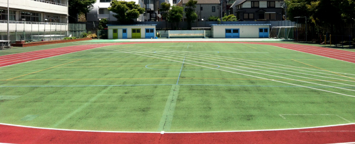
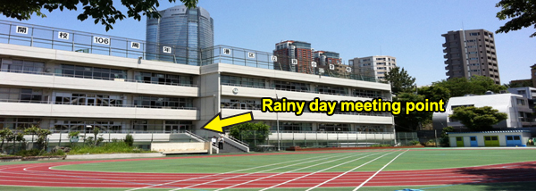
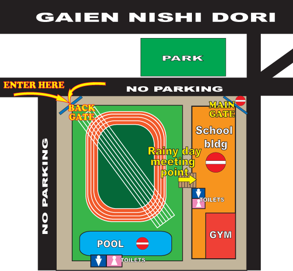

|
Kogai Elementary School, Nishiazabu
Kogai Elementary School sits in the heart of Tokyo, just minutes on foot from Hiroo and Nishiazabu crossing. It is easily accessible from the illustrious Roppongi Hills, Motoazabu and Azabu Juban areas - all of which are popular residential areas of Tokyo's thriving expatriate community.

British Football Academy sessions at the school will take place on a safety-approved, rubberized playground and as such all children are asked to wear flat-soled trainers (sneakers) for their own safety (football boots (cleats) with molded or screw-in studs will not be permitted on this surface). As with all of our locations shin pads must be worn by all children participating in BFA coaching sessions. BFA children are asked to wear the official adidas Academy uniform during all sessions, so they will be easily recognizable to BFA coaches.

Rain Plan
In the event of inclement weather, sessions cannot be held on the field as it gets too slippery and dangerous for the children to play. In this case morning sessions will be held in the gym (IF it is available), with the classes being tailored to suit the smaller space. Please see rain plan rules regarding footware etc given to you with your members guide. Afternoon classes must be cancelled as the space is too small for the older children, they will however be offered the chance to have a make-up game at Ohashi Junction. Where possible, we will inform you by 12 noon (for PM classes) on the day via email and our facebook page.
|
CLASSES AT THIS LOCATION
|
|
 PUPS PUPS
9:20~9:50am
|
 BULLDOGS BULLDOGS
10:00~10:50am
|
 LIONS LIONS
11:00~12:00pm
|
 ACADEMY ACADEMY
1:00~2:20pm
|
|
|
 ACADEMY STARS ACADEMY STARS
2:30~3:50pm
|
Under 15s
4:00~5:00pm (3:50~4:50pm in winter)
|
GETTING THERE
By Train
Take the Hibiya line to Hiroo Station and go out of the north exit (Exit 3) then walk North along Gaien Nishi dori (5~10 min walk) towards Nishi Azabu. Please enter by the BACK GATE, NOT the MAIN GATE!
By Car
Unfortunately parking is not available at the school, so parents bringing their children by car are asked to park at one of the coin parking lots on Gaien Nishi Dori. For information (Japanese only) on coinparking near the school, please CLICK HERE.
|


{kind=link}